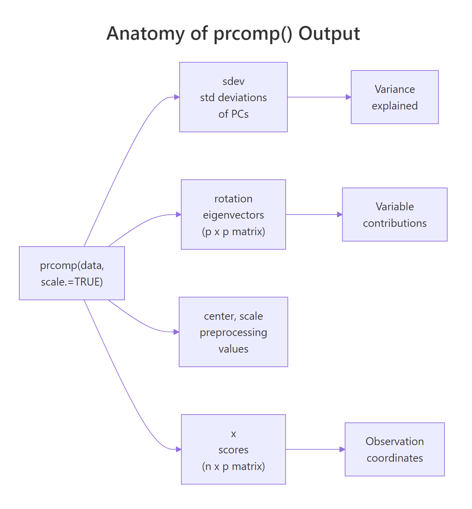
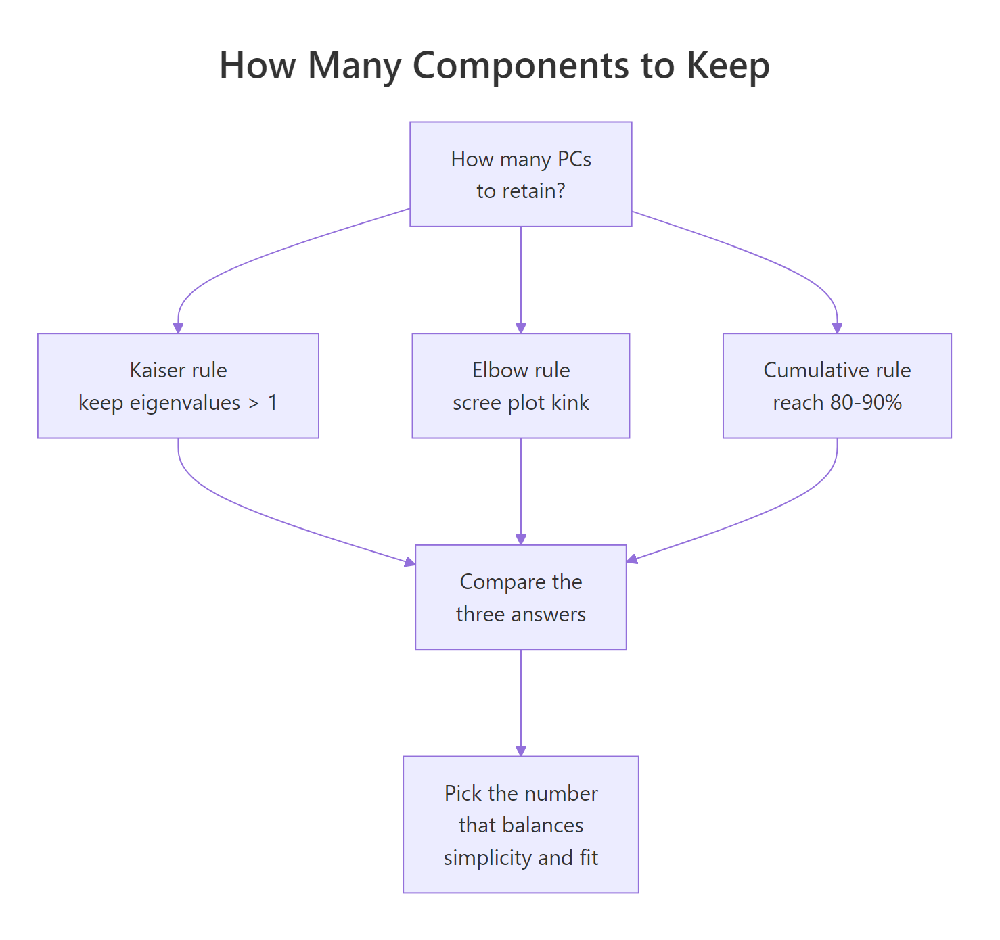
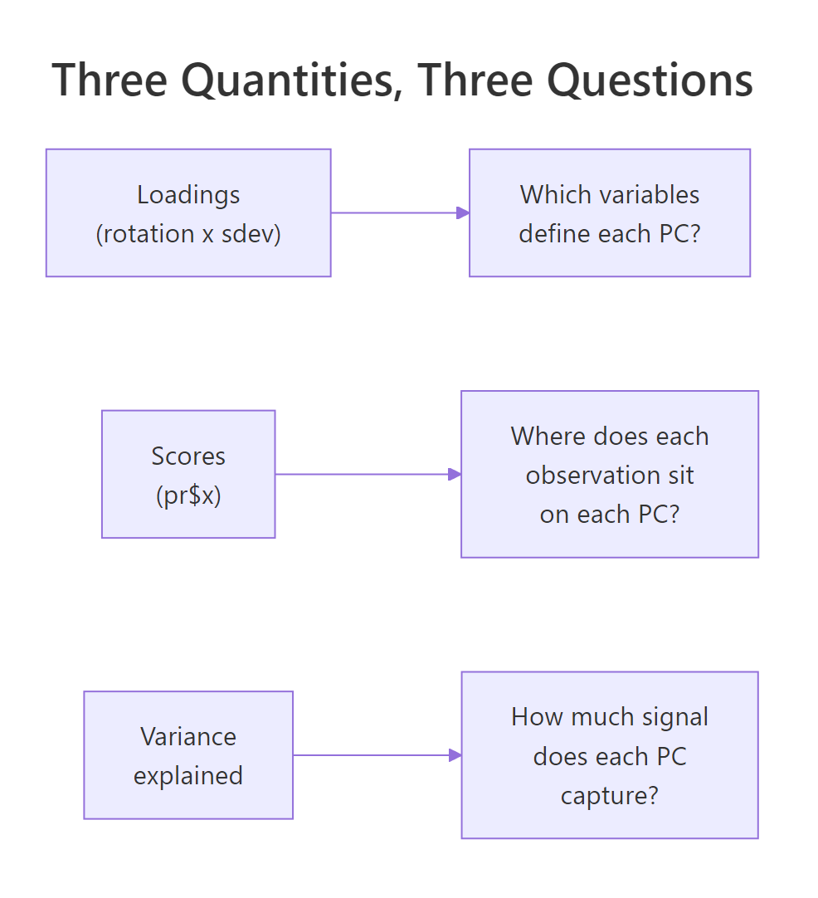

Read PCA Output in R: What Loadings, Scores, and Variance Explained Actually Tell You
PCA output in R boils down to three quantities: loadings (how variables combine into each component), scores (where each observation sits on each component), and variance explained (how much signal each component captures). Once you can read these three, you can read any prcomp() result.
What does prcomp() actually return?
When you call prcomp() on a dataset, R hands you a list with five slots. Three of them carry all the interpretive weight: sdev, rotation, and x. Let's fit PCA on the built-in USArrests data, print a summary, and map each slot to the question it answers.
The dataset has 50 US states and four variables: Murder, Assault, UrbanPop, and Rape. We scale the variables (divide by their standard deviation) so that no variable dominates just because its numbers are larger.
That one table answers the whole "how much signal is in each component" question. PC1 alone captures 62% of the variance in USArrests; PC1 and PC2 together capture 85%. In a four-variable dataset that is a heavy compression: two components carry most of what the four original variables told us.
Next, inspect the structure of the fitted object itself. We want to see which slot holds what.
Four slots matter for interpretation. sdev is the per-PC standard deviation (square it to get the eigenvalues). rotation is a p × p matrix whose columns are the eigenvectors (sometimes called loadings). x is an n × p matrix of scores, the projection of every observation onto every PC. center and scale just record the preprocessing so you can reverse it if needed.

Figure 1: The five slots prcomp() returns and the three questions they answer.
prcomp() over the older princomp(). prcomp() computes PCA via singular value decomposition, which is numerically stable and does not require more rows than columns. princomp() uses the eigendecomposition of the covariance matrix and fails when n < p. Stick with prcomp() unless you have a legacy reason not to.Try it: Run prcomp() on the first four numeric columns of iris with scaling on, then identify which slot holds the 150 × 4 scores matrix.
Click to reveal solution
Explanation: pr$x always holds the scores (observations projected onto PCs). Its rows match the input row count; its columns match the number of PCs.
What do the loadings tell you?
Loadings answer the question: which original variables define each principal component? In prcomp(), the matrix pr$rotation carries this information. Each column is one PC, and each row is one original variable. The number at position (i, j) tells you how strongly variable i contributes to PC j and in which direction.
Let's look at the rotation matrix for USArrests.
Focus on PC1 first. The three violent-crime variables (Murder, Assault, Rape) all have large negative loadings around −0.54 to −0.58, while UrbanPop has a much smaller loading of −0.28. All four are negative and of similar-enough magnitude that PC1 reads as a roughly balanced "overall crime plus urbanization" axis, with the crime variables dominating.
Now PC2. The sign pattern changes: Murder and Assault are positive; UrbanPop and Rape are negative. UrbanPop alone has a huge loading of −0.87. PC2 is mostly "UrbanPop, versus everything else". It separates states where urbanization is high from states where it is low.
That one line distills the PC2 story: urbanization drives this component almost by itself. Whenever a PC has one loading much larger in absolute value than the others, that PC is essentially a rescaled version of that single variable.
Try it: On USArrests PC3, find the variable with the largest absolute loading and report its sign.
Click to reveal solution
Explanation: which.max(abs(...)) finds the index with the largest absolute value; indexing the named vector returns the variable name with its signed loading.
What are the scores, and what do they mean?
Scores answer the question: where does each observation sit on each component? The matrix pr$x has one row per observation and one column per PC. The value at row i, column k is the coordinate of observation i on PC k, its location along that axis.
Let's peek at the first few rows.
California's PC1 score of −2.50 is the lowest here. Recall that PC1's loadings were all negative and dominated by the crime variables, so a very negative PC1 score means California is high on the crime variables. That tracks. North Dakota, meanwhile, ends up high on PC1 (check it yourself), meaning low crime.
Let's make the "high and low" story concrete.
States with the most negative PC1 (California, Florida, Nevada) are the high-crime states. States with the most positive PC1 (North Dakota, Vermont, Maine) are the low-crime states. PC1 has literally given us a one-number summary of how each state stands on the dominant pattern in the data.
There is no magic in how scores are produced. They are exact matrix multiplication: take the scaled data, multiply by the rotation matrix, and you get pr$x.
The differences are at machine precision (about 10⁻¹⁶), confirming that scores are just linear combinations of the standardised variables, weighted by the rotation matrix.
pr$x[, 1:k] is ready to use. With k = 2 on USArrests you can plot all 50 states on a 2D map where distances mean something meaningful (overall crime-urbanization pattern).Try it: Pull out the five states with the highest PC2 score and store them in ex_top_pc2.
Click to reveal solution
Explanation: sort(..., decreasing = TRUE)[1:5] returns the five largest PC2 scores with state names attached. These are states low on urbanization (remember, UrbanPop loads heavily negative on PC2, so high PC2 = low UrbanPop).
How is variance explained computed, and when is it enough?
Variance explained answers: how much of the signal in the data does each PC capture? The building blocks are the eigenvalues, the squared standard deviations, stored in pr$sdev^2. Divide each eigenvalue by the total and you get the proportion of variance for each PC. Take the running sum and you get cumulative variance.
Let's reproduce the summary() importance table by hand.
These numbers match the summary() output exactly (up to rounding). The takeaway: on USArrests, two PCs reach 87% cumulative, three reach 96%, and four reach 100% (always true for p components on p variables).
A scree plot is the standard visual for deciding how many PCs to keep. We put PC number on the x-axis and the proportion on the y-axis.
The bars drop sharply after PC1, then again (softly) after PC2, then level off. The elbow sits at PC2–PC3. The dashed red line marks the "equal-share" threshold (1/p = 0.25): any PC above it carries more variance than a single original variable would on its own.

Figure 2: Three heuristics for deciding how many principal components to retain.
Three heuristics are in common use:
- Kaiser rule (λ > 1). Keep every PC whose eigenvalue exceeds 1. Only valid when you scaled the data, because scaling sets each variable's variance to 1. A PC with λ < 1 explains less than any single standardised variable.
- Elbow rule. Retain PCs up to the visible kink in the scree plot. Subjective but often agrees with the other rules.
- Cumulative rule. Keep the smallest k such that cumulative variance reaches a target (commonly 80% or 90%).
On USArrests, Kaiser suggests 2 (λ values 2.48 and 0.99, so PC2 is borderline), the elbow also suggests 2, and the 80% cumulative rule suggests 2. All three agree. When rules disagree, prefer the cumulative target that matches your downstream use (visualization, compression, input to another model).
scale. = FALSE), variables with larger natural variance contribute larger eigenvalues by construction, and the λ = 1 cutoff is meaningless. Use the cumulative rule instead, or scale first.Try it: Count how many PCs on USArrests satisfy the Kaiser rule.
Click to reveal solution
Explanation: Strictly applied, only PC1 (λ = 2.48) crosses the threshold. Because PC2's eigenvalue is 0.9898 (essentially 1), many analysts would keep PC2 as well. Kaiser is a guideline, not a hard cutoff.
What's the difference between rotation, loadings, and eigenvectors?
This is where tutorials go sideways. Three terms get mixed up: eigenvectors, rotation, and loadings. Here is the clean answer.
- Eigenvectors: the directions, in the original variable space, along which the data has maximum variance. Unit-length vectors.
pr$rotation: the matrix whose columns are those eigenvectors. Unit length per column.- Loadings (classical definition): eigenvector × √eigenvalue = rotation column × sdev. Loadings equal the Pearson correlations between the original variables and the principal component scores.
R's prcomp() returns rotation, not classical loadings. Many tutorials still call rotation "loadings", which is not wrong so much as inconsistent with the textbook definition. When you need the interpretive power of correlations, you compute loadings yourself.
Start with the unit-length check.
Each column's squared entries sum to 1, which is the definition of unit length. Now compute the classical loadings.
Read the PC1 column: Murder, Assault, and Rape are around −0.85 to −0.92. These are (up to sign) the Pearson correlations between those variables and PC1 scores. Let's verify.
Identical. This is why classical loadings are interpretively useful: they live on the correlation scale, so a value of −0.918 means Assault and PC1 are strongly negatively correlated. Moving along PC1 by one standard deviation moves Assault by about −0.918 standard deviations.
Try it: Compute the classical loading for Murder on PC1 via the formula, and via cor(). They should match.
Click to reveal solution
Explanation: Both routes produce −0.844. This identity (loading = correlation between variable and PC) holds exactly when the data is scaled; for unscaled data the analogous identity uses covariances instead.
Why should you scale variables before PCA?
PCA finds directions of maximum variance. If one variable has a raw variance 100 times larger than another, PC1 will nearly follow that variable alone, not because it is more important, but because its units are bigger. Scaling (dividing each variable by its standard deviation) puts every variable on an equal footing before the variance maximization begins.
Let's see the effect on USArrests by fitting PCA without scaling.
PC1 is almost entirely Assault (loading −0.995). The reason: Assault in the raw data ranges from about 45 to 337, while Murder ranges from 0.8 to 17. Assault has by far the largest variance, so it wins the unscaled tournament. PC2 then picks up UrbanPop, the next-largest-variance variable. Neither component is about the pattern between variables. They are just the variables with big numbers, ranked.
Compare to the scaled version.
With scaling, PC1 becomes a balanced average of the three crime variables. That is the interpretation you actually want, a latent "violent crime level", not "whichever variable happened to have the biggest raw numbers".
scale. = TRUE unless all variables share the same unit AND scale carries meaning. Most real-world datasets mix units: dollars, percentages, counts, ratios. Scaling is almost always the right call. Keep scale. = FALSE only in cases like pixel intensities on a fixed scale, or when you have a specific reason to let variance differences carry signal.Try it: Run PCA on mtcars with scale. = FALSE. Identify which variable dominates PC1.
Click to reveal solution
Explanation: disp (engine displacement, cubic inches) has the largest raw variance among mtcars columns, so unscaled PC1 is almost entirely disp. With scale. = TRUE, PC1 becomes the familiar "big cars vs efficient cars" axis spread across several variables.
Practice Exercises
Exercise 1: Find the smallest k that reaches 90% cumulative variance
Fit scaled PCA on iris[, 1:4], compute the cumulative proportion of variance, and find the smallest number of PCs that reaches at least 90%. Save the answer to my_k.
Click to reveal solution
Explanation: iris's PC1 captures 73% and PC2 adds 23%, hitting 96% at k = 2. which(... >= 0.9)[1] returns the first index that crosses the threshold.
Exercise 2: Which USArrests state is highest on PC2?
Build a data frame called my_scores_df with columns state, PC1, and PC2 from the USArrests PCA. Then find the state with the highest PC2 score and store the state name (character) in my_top_state.
Click to reveal solution
Explanation: Mississippi sits at the top of PC2. Because PC2's biggest loading is UrbanPop with a negative sign, high PC2 means low UrbanPop. Mississippi has one of the lowest urbanization rates in the dataset, which lines up.
Exercise 3: Verify loadings equal correlations
Compute the classical loadings matrix for USArrests as my_loadings = rotation × sdev. Then compute cor(USArrests, pr$x) and confirm the two matrices are equal up to rounding error.
Click to reveal solution
Explanation: sweep() multiplies each column of pr$rotation by the corresponding entry in pr$sdev, producing classical loadings. These are mathematically identical to the Pearson correlations between each original variable and each PC score column (for scaled PCA).
Complete Example
Putting the six sections together on iris[, 1:4]: fit scaled PCA, read variance explained, interpret loadings per PC, extract scores for downstream use.
Reading the output top-to-bottom: iris compresses extremely well, with 73% of the variance on PC1 and 96% on the first two. PC1 is an overall flower-size axis, dominated by Petal.Length and Petal.Width (plus Sepal.Length on the positive side). PC2 is mostly Sepal.Width. The first two scores are all you need to visualize or cluster the 150 flowers.
Summary
prcomp() gives you three answers, one per core quantity.
| Quantity | Slot | Question | How to read |
|---|---|---|---|
| Variance explained | pr$sdev^2, summary(pr) |
How much signal does each PC capture? | Proportions sum to 1; cumulative tells you compression power. |
| Rotation (eigenvectors) | pr$rotation |
Which original variables define each PC, and how? | Unit-length columns. Sign is arbitrary; within-column pattern is the interpretation. |
| Classical loadings | sweep(rotation, 2, sdev, *) |
What is the correlation between each variable and each PC? | Values on the correlation scale (−1 to 1). Larger magnitude = stronger tie. |
| Scores | pr$x |
Where does each observation sit on each PC? | Coordinates in the new basis; ready for plotting, clustering, or regression. |

Figure 3: The three core PCA quantities and the interpretive question each one answers.
Three working rules to take away:
- Always scale unless you have a reason not to.
- Read rotation patterns (not individual signs) to label each PC.
- Use classical loadings (not rotation entries) when you want interpretive, correlation-scale numbers.
References
- James, G., Witten, D., Hastie, T., Tibshirani, R. An Introduction to Statistical Learning, 2nd Edition. Chapter 12: Unsupervised Learning (PCA). Link
- Jolliffe, I. T. Principal Component Analysis, 2nd Edition. Springer Series in Statistics. Link
- R Documentation:
?prcomp. Part of the basestatspackage. Link - Jolliffe, I. T., Cadima, J. "Principal component analysis: a review and recent developments." Philosophical Transactions of the Royal Society A (2016). Link
- Wickham, H., Grolemund, G. R for Data Science. Chapter on exploratory techniques. Link
- tidymodels / recipes:
step_pca()reference. Link - factoextra package documentation: PCA visualization helpers built on
prcomp(). Link
Continue Learning
- PCA with prcomp() in R: the companion "how to run PCA" tutorial; pair with this one for full coverage.
- Multivariate Distances and Hotelling's T²: the broader family of multivariate techniques PCA belongs to.
- Multi-Dimensional Scaling in R: a related dimension-reduction method based on pairwise distances instead of variance.